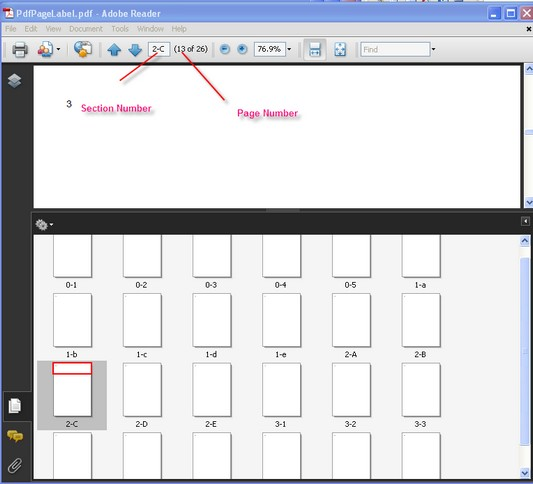

Automatic Fields or Dynamic Fields are special objects that display information calculated automatically, just before the document is saved. \
The fields display the following:
· Page number
· Count of pages
· Author of the document
· Creation and current date
It also displays other information of the document, which is not always evaluated at the moment of constructing the document.
To display the correct value of the field, you should specify the following important properties.
· Font-Font used to display the value of the field. Exception is thrown if this property is not set.
· Brush-Brush used to print the value of the field. Exception is thrown if this property is not set.
· Bounds-Specifies the bounds of the field.
You can also use the Location and Size properties to define the bounds of the field.
· Location-Location of the field. Default point is (0, 0).
· Size-Size of the field. If it is not set, the size of the field is automatically calculated to display the value.
 Note: It is not necessary to set the Bounds and
Size with Location at the same time. Size and Bounds.Size have the same
values.
Note: It is not necessary to set the Bounds and
Size with Location at the same time. Size and Bounds.Size have the same
values.
Numeric fields have an additional NumberingStyle property. There are five possible numbering styles supported by the automatic fields:
· Arabic (1, 2, 3, 4, ...)
· Upper Roman (I, II, III, IV, ...)
· Roman (i, ii, iii, iv, ...)
· Upper Latin (A, B, C, D, ..., Z, AA, AB, ...)
· Latin (a, b, c, d, ..., z, aa, ab, ...)
A brief description on various numbering fields is given below:
· PdfPageNumberField-Number of the page on which the field has been drawn
· PdfPageCountField-Total number of pages in the document
· PdfSectionPageNumberField-Number of pages within a section
· PdfSectionPageCountField-Number of sections in a document
· PdfSectionNumberField-Number of sections within a document
· PdfCreationDateField-Creating date of the document; the value is taken from the DocumentInformation.CreationDate property
· PdfDateTimeField-Current date and time
· PdfDestinationPageNumberField-Number of the specified destination page
· PdfCompositeField-Value of the field is composed of any number of other automatic fields
PdfCreationDateField and PdfDateTimeField have the DateFormatString property, which defines the formatting string for the value of the field. This property uses the same formatting rules and specifiers as DateTime type of .NET. For detailed information on formatting specifiers, see http://msdn2.microsoft.com/en-us/library/73ctwf33(VS.80).aspx.
You can draw the Automatic Fields on the PdfTemplate and set them as the document template or manually draw them on the necessary pages. The values of the fields will be automatically populated on each copy of the template.
The following code example illustrates how to insert dynamic fields such as page number, count, datetime, composite fields, and so on, into the existing document.
|
[C#]
PdfLoadedDocument doc = new PdfLoadedDocument(@"../../Sample.pdf"); PdfFont font = new PdfStandardFont(PdfFontFamily.Helvetica, 12);
//Create page number field PdfPageNumberField pageNumber = new PdfPageNumberField(font, PdfBrushes.Black);
//Create page count field PdfPageCountField count = new PdfPageCountField(font, PdfBrushes.Black); PdfDateTimeField datetimefield = new PdfDateTimeField(font, PdfBrushes.Black); PdfCompositeField compositeField = new PdfCompositeField(font, PdfBrushes.Black, "Page {0} of {1}{2}", pageNumber, count,datetimefield); compositeField.Bounds = new RectangleF(0,0,250,100); compositeField.Draw(doc.Pages[0].Graphics, new PointF(0, 0));
PdfCreationDateField datefield = new PdfCreationDateField(font, PdfBrushes.Black); |
|
[VB.NET]
Dim doc As New PdfLoadedDocument("../../Sample.pdf") Dim font As PdfFont = New PdfStandardFont(PdfFontFamily.Helvetica, 12)
'Create page number field Dim pageNumber As New PdfPageNumberField(font, PdfBrushes.Black)
'Create page count field Dim count As New PdfPageCountField(font, PdfBrushes.Black) Dim datetimefield As New PdfDateTimeField(font, PdfBrushes.Black) Dim compositeField As New PdfCompositeField(font, PdfBrushes.Black, "Page {0} of {1}{2}", pageNumber, count, datetimefield) compositeField.Bounds = New RectangleF(0, 0, 250, 100) compositeField.Draw(doc.Pages(0).Graphics, New PointF(0, 0))
Dim datefield As New PdfCreationDateField(font, PdfBrushes.Black) |
When an automatic field is used as a component of the composite field, it is not necessary to specify its Font, Brush and Bounds properties. Just call its constructor without parameters.
Note: You must specify the preceding properties
for the composite field.
The following code example illustrates how to use automatic fields in templates.
|
[C#]
PdfLoadedDocument doc = new PdfLoadedDocument(@"../../Sample.pdf");
PdfFont font = new PdfStandardFont(PdfFontFamily.Helvetica, 12f); PdfBrush brush = PdfBrushes.Black;
PdfTemplate template = new PdfTemplate(15, 15);
PdfDateTimeField dateField = new PdfDateTimeField(font, brush); dateField.DateFormatString = "dd'/'MMMM'/'yyyy";
dateField.Draw(template.Graphics);
for (int i = 0; i < 50; i++) { PdfPage page = document.Pages.Add(); page.Graphics.DrawPdfTemplate(template, new Point(50, 50)); } |
|
[VB.NET]
Dim doc As PdfLoadedDocument = New PdfLoadedDocument()
Dim font As PdfFont = New PdfStandardFont(PdfFontFamily.Helvetica, 12.0F) Dim brush As PdfBrush = PdfBrushes.Black
Dim template As PdfTemplate = New PdfTemplate(15, 15)
Dim dateField As PdfDateTimeField = New PdfDateTimeField(font, brush) Dim dateField.DateFormatString = "dd'/'MMMM'/'yyyy"
dateField.Draw(template.Graphics)
For i As Integer = 0 To 49 Dim page As PdfPage = document.Pages.Add() page.Graphics.DrawPdfTemplate(template, New Point(50, 50)) Next i |
PDF Page Label
A PdfPageLabel object specifies a new numbering range to be applied to the document sections. The following code example illustrates how to set the numbering range to the PDF document sections.
|
[C#]
for (int k = 0,i1=0; k < ldoc.Section.Count; k++) { PdfPageLabel label = new PdfPageLabel(); label.StartNumber = 1; if (k == 0) { label.NumberStyle = PdfNumberStyle.Numeric; } else if (k == 1) { label.NumberStyle = PdfNumberStyle.LowerLatin; } else if (k == 2) { label.NumberStyle = PdfNumberStyle.UpperLatin; }
label.Prefix = i1 + "-"; ldoc.LoadedPageLabel = label; i1++; } |
|
[VB.NET]
Dim k As Integer = 0, i1 As Integer = 0 While k < ldoc.Section.Count Dim label As New PdfPageLabel() label.StartNumber = 1 If k = 0 Then label.NumberStyle = PdfNumberStyle.Numeric ElseIf k = 1 Then label.NumberStyle = PdfNumberStyle.LowerLatin ElseIf k = 2 Then label.NumberStyle = PdfNumberStyle.UpperLatin End If
label.Prefix = i1 & "-" ldoc.LoadedPageLabel = label i1 += 1 k += 1 End While |

Figure 58: Setting the numbering Range for PDF document